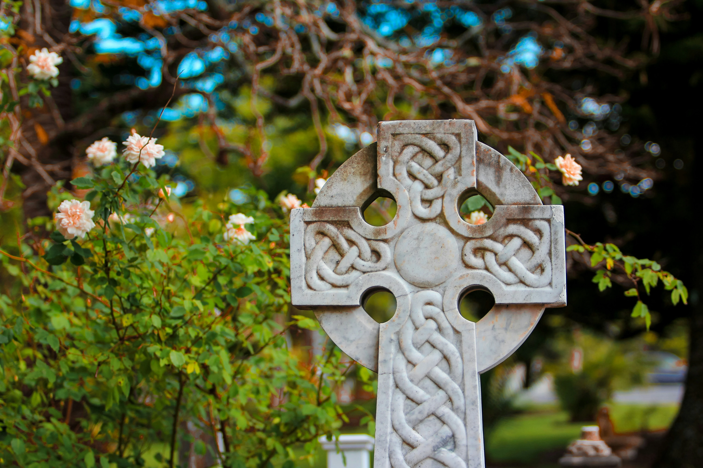
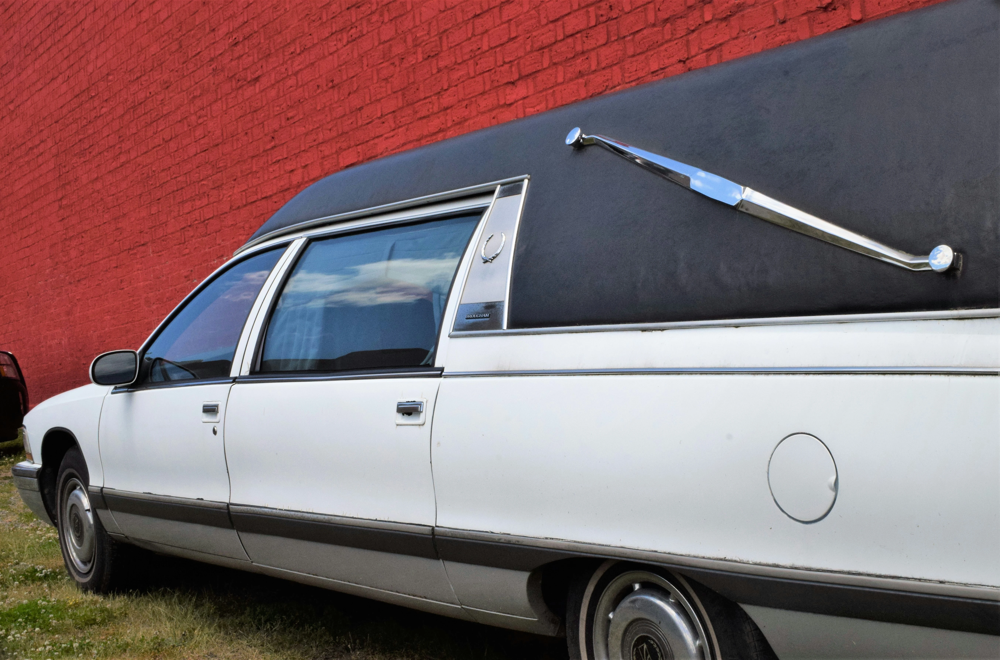

The Funeral Director
A funeral director is a professional who manages all aspects of the funeral
process. Their responsibilities include preparing the body, organizing the funeral
service, handling legal documentation, and providing support to the bereaved family.
They ensure that all arrangements are carried out according to the family's wishes
and legal requirements.

The Funeral Home
A funeral home is a facility that provides services for
the deceased and their
families, including preparing the body, arranging the funeral service, and offering
support during the grieving process. Funeral homes typically have viewing rooms,
chapels, and spaces for gatherings, ensuring all aspects of the funeral are managed
with care and respect.
Cremation
Cremation involves burning the body in a crematorium. The process reduces the body to
ashes, which are then given to the family. Cremation is a flexible option that can be
more affordable than traditional burials, and the ashes can be kept, buried, or
scattered in a meaningful location
Burial
Burial is the traditional practice of placing the deceased's body in a grave in a cemetery.
This process often includes a graveside service where family and friends gather to say their
final goodbyes. Burial plots are purchased, and fees for opening and closing the grave are
typically involved.
Catholic
A Catholic funeral follows the traditions and rituals of the Catholic Church, often
including a funeral Mass, prayers, and specific rites
Humanist
A humanist funeral is a non-religious ceremony that focuses on celebrating the life of the
deceased through personal stories, music, and readings, without religious content.

The Grave
Securing a grave in an Irish cemetery involves selecting and purchasing a burial plot,
either in advance or at the time of need. This includes paying for the plot and any
associated fees for opening and closing the grave. The cemetery staff coordinates with the
funeral director to ensure the burial process is smooth and respectful.
Tombstone
The process of getting a tombstone in Ireland typically begins after the funeral and can
take several months. Families first choose a design and inscription, often working with a
stonemason. Once approved, the tombstone is crafted, which can take some time. After
completion, the tombstone is installed at the gravesite, marking the final resting place of
the deceased.


Hearse
A hearse is a specialized vehicle used for transporting the deceased from the funeral home
to the service location and finally to the burial site or crematorium. The hearse ensures
the dignified conveyance of the deceased and is a central part of the funeral procession.
Wake
A wake is held before the funeral, when the deceased is laid out for viewing. It allows
family and friends to pay their respects and spend time with the deceased in a more informal
setting. Wakes can be held at home or in a funeral home and are an important tradition in
Irish culture.


Collecting the Body
The collection of the body involves transporting the deceased from the place of death
(e.g., home, hospital) to a funeral home. This service is typically handled by the funeral
director and their staff, who ensure the body is treated with dignity and care during
transport.
Our Online Booking Service
Our online booking service is the first of its kind in Ireland, allowing families to plan and book funerals from the comfort of their homes.
This service provides an easy-to-use platform where you can select funeral packages, customize arrangements, and ensure all details are handled efficiently, offering convenience during a difficult time.